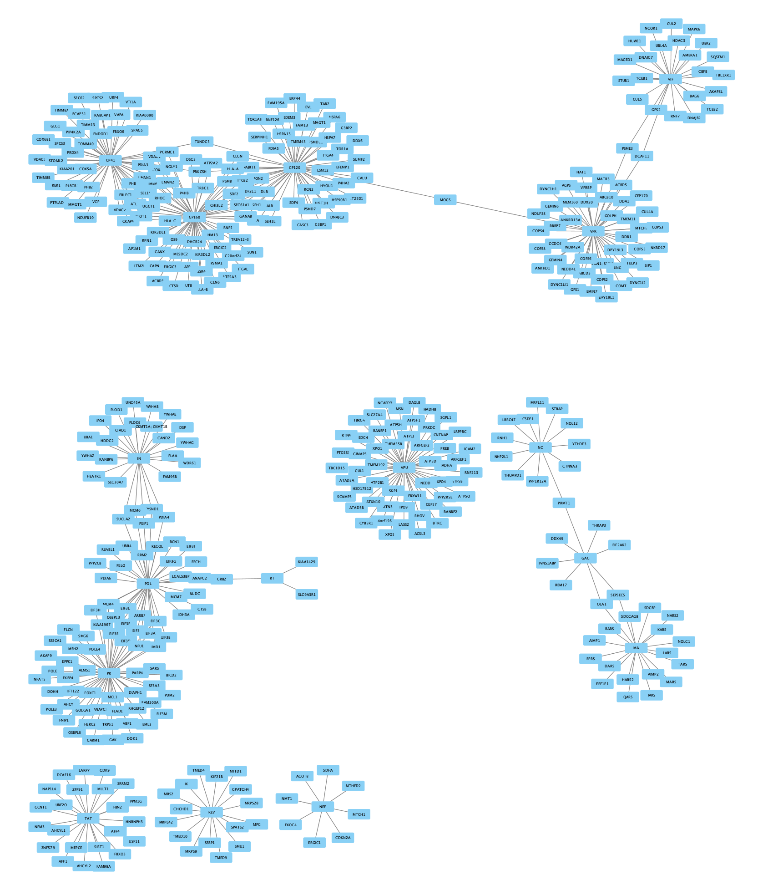

Importing Network From Table
In addition to importing networks in network file formats, such as sif and xgmml, Cytoscape also supports importing networks from tabular data. In this example, the data table represents protein-protein interaction data from a mass-spectrometry experiment.

Background
The data used for this protocol represents interactions between human and HIV proteins by Jäger et al. In this quantitative AP-MS experiment, a relatively small number of bait proteins were used to pull down a larger set of prey proteins.
Import Network
- Load the network via
File → Import → Network from File.... , and select the Example data. - In the
Import Network from Table dialog, select theBait column asSource Node andPrey column asTarget Node . - Designate the
AP-MS Score as anEdge Attribute . - Designate the
HEKScore as aTarget Node Attribute , by clicking in the column header and selecting the red spreadsheet icon. - Click
OK to import the network.
Note: In cases where a Prey node interacts with more than one Bait node, it will have multiple rows of values for the same attribute (for example HEKScore). During import, the last value imported will overwrite prior values and visualizations using this attribute thus only shows the last value.

Import Network and Data
The imported network consists of multiple smaller subnetworks, each representing a bait node and its associated prey nodes:
